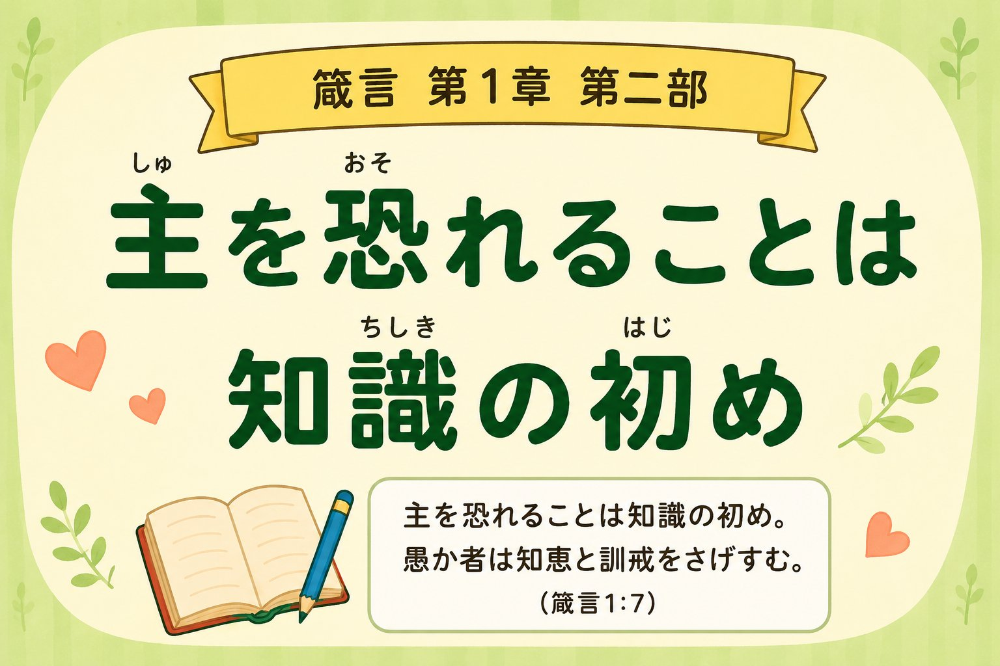
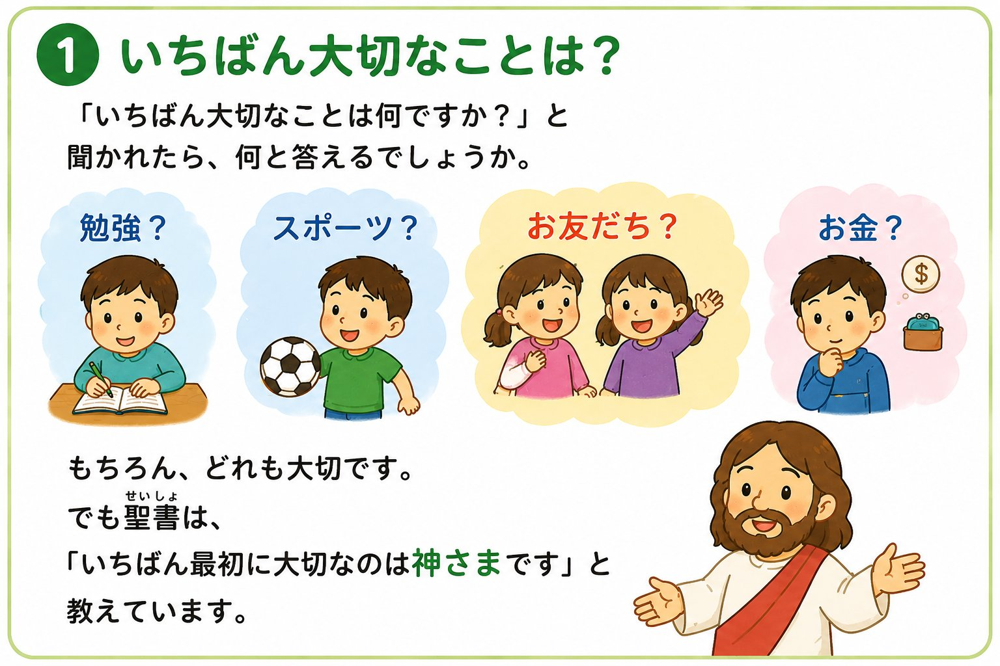
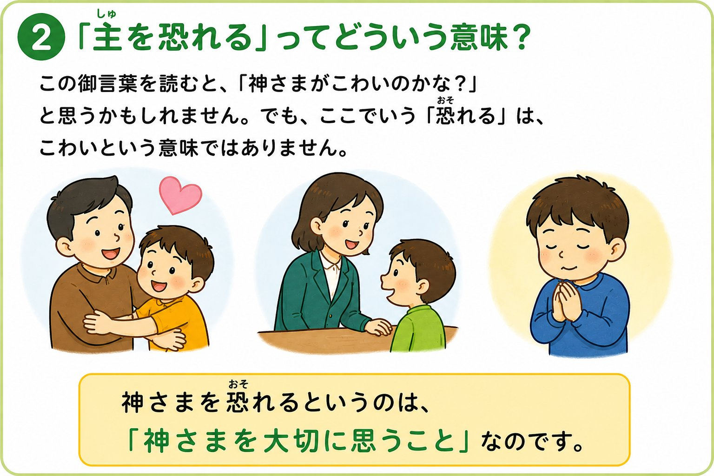
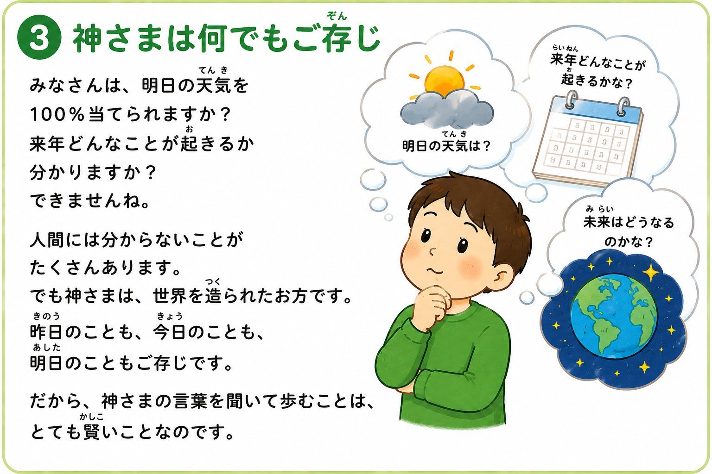
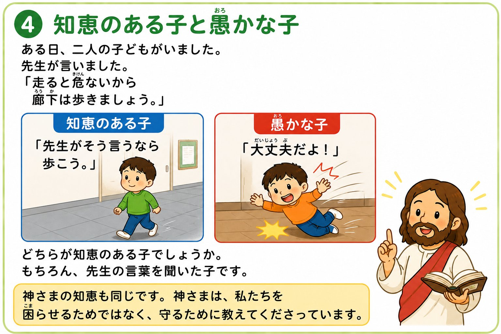
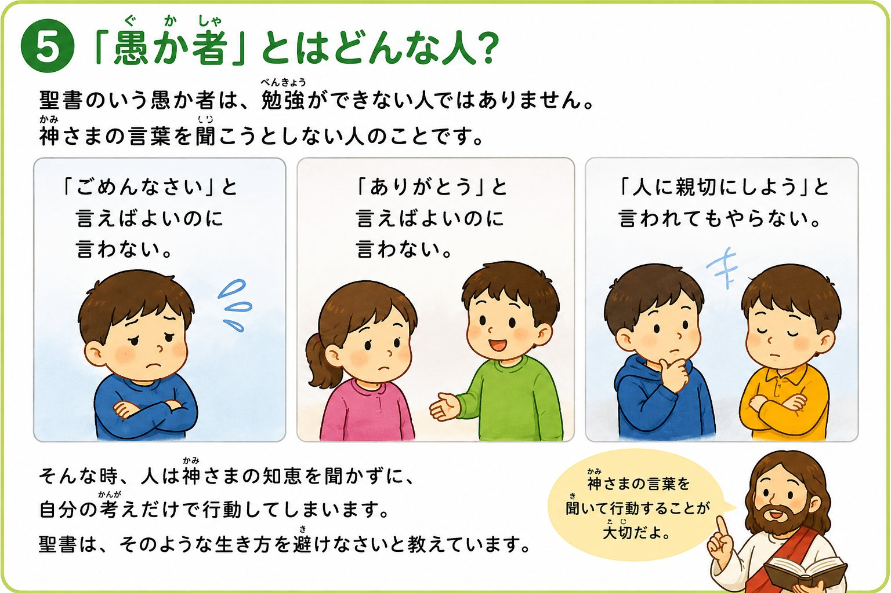
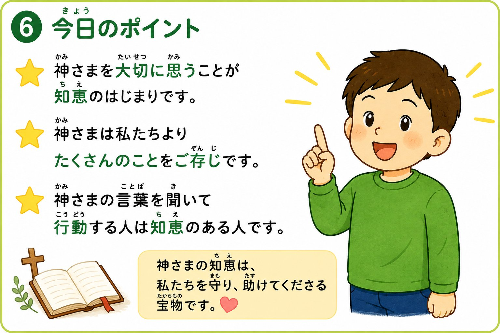
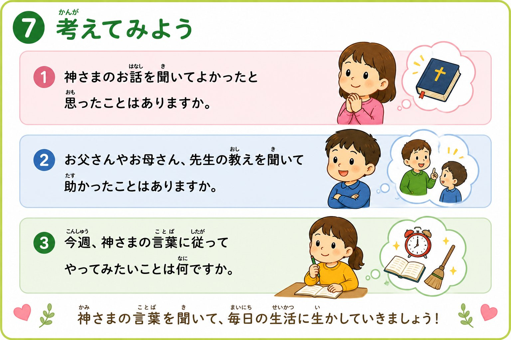
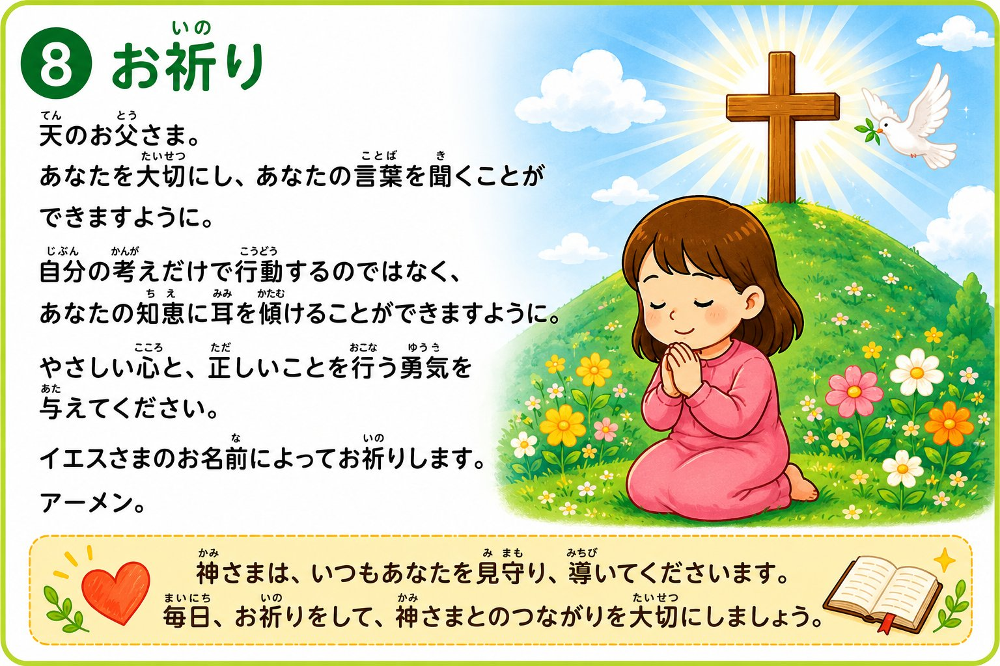

箴言 1:7

みなさんは、「いちばん大切なことは何ですか？」と聞かれたら、何と答えるでしょうか。
もちろん、どれも大切です。
でも聖書は、こう教えています——

この御言葉を読むと、「神さまがこわいのかな？」と思うかもしれません。
たとえば——
それは、相手を大事に思っているからですね。

人間には分からないことがたくさんあります。
でも神さまは——

ある日、二人の子どもがいました。先生が言いました——
神さまの知恵も同じです。神さまは、私たちを困らせるためではなく、守るために教えてくださっています。

聖書のいう愚か者は、勉強ができない人ではありません。
たとえば——
聖書は、そのような生き方を避けなさいと教えています。



